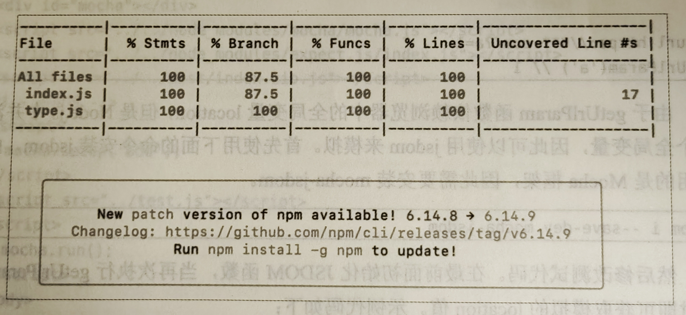

JavaScript 库会被很多项目使用，这一特殊性使得我们对代码质量的要求更加严格，在对外发布前需要进行严格的测试。一个库如果没有被测试，漏洞百出，那么这对于库的开发者和使用者来说都将是灾难。
测试可以包含多个维度，如单元测试、兼容性测试、黑盒测试等。本章主要介绍单元测试，测试驱动开发可以帮助库的开发者找到遗漏的逻辑，从而更好地完成开发，同时在库的后续迭代中也能保证不会引入缺陷。
第一个单元测试
随着代码行数的增多，Bug 在所难免，而避免 Bug 最好的方法就是进行测试。对于库来说，每次改动代码都要进行全面的测试。特别是当要对库代码进行重构时，测试能够降低重构的风险。但是，如果每次都通过人工进行测试，则既浪费时间容易出错，更好的做法是编写代码来测试代码，因为代码能够快速多次运行，并且稳定可靠，这种方法被称作单元测试。
单元测试比较适合库开发场景，其提倡边写测试边写代码，通过测试来保证和提升代码质量。设计单元测试用例的方法有两种，分别是测试驱动开发（Test Driven Development，TDD）和行为驱动开发（Behavior Driven Development，BDD），这里不展开介绍两者之间的区别，本书采用 BDD 方法来添加单元测试。
Mocha 是历史比较悠久的测试框架，其相对比较成熟，并且使用范围广泛，兼容性能够满足我们的要求，所以我们选择 Mocha 作为测试框架。
虽然 Mocha 可以提供组织和运行单元测试并输出测试报告的功能，但是要进行单元测试还需要一个断言库，Mocha 推荐使用 Chai 作为断言库。
这里使用另一个断言库 expect.js，是一个 BDD 体系的断言库，兼容性非常好
确定了方案，我们使用下面的命令搭建环境，首先安装 Mocha 和 expect.js，然后新建一个 test 目录，并在 test 目录下新建 test.js 文件
npm i mocha --save-dev
npm i expect.js --save-dev
mkdir test
touch test/test.js
接下来，在 test.js 文件中添加如下代码：
在 Mocha 中使用 describe 来组织测试结构，describe 可以嵌套，describe 的语义也可以自定义，it 代表一个测试用例，一个测试用例中可以有多个 expect 断言。
var expect = require("expect.js");
describe("单元测试", function () {
describe("test hello", function () {
it("hello", function () {
expect(1).to.equal(1);
});
});
});
执行测试命令：
npx mocha
将执行命令添加到 package.json 文件的 scripts 字段中，
{
"scripts": {
//...
"test": "mocha"
}
}
自此，运行成功。
设计测试用例
在编写代码之前需要先设计测试用例，测试用例要尽可能全面地覆盖各种情况，这样才能保证质量；在覆盖全面的同时，数量要尽可能少，这样能提高测试效率。
设计思路
对于函数的测试，可以按照参数分组，每个参数一组，在对一个参数进行测试时，保证其他参数无影响，
function leftpad(str, count, ch = "0") {
return `${[...Array(count)].map((v) => ch)}${str}`.slice(-count).join("");
}
leftpad("1", 2); // "01"
由于 leftpad 函数有 3 个参数，因此可以分为 3 组。在对每个参数进行测试时，测试用例可以分为正确的测试用例和错误的测试用例，并且对于存在边界值情况的参数，还需要对边界值设计测试用例。
需要注意的是，每个分组下面可以采用等价类划分方法，对于同一个类型的输入，只需要设计一个用例即可。
| 分组 | 正确的测试用例 | 错误的测试用例 | 边界值测试用例 |
|---|---|---|---|
| str | 任意字符串 | 非字符串 | 空字符串 |
| count | 1 ~ N | 非数字 | 0，负数 |
| ch | 任意字符串 | 非字符串 | 空字符串 |
接下来，用上述的方法来给我们的深拷贝库设计测试用例，下面是深拷贝库中 clone 函数的示例代码：
function clone(data) {
//...
}
由于只有一个参数，因此只有一个分组，但是因为基本类型数据和引用类型数据的拷贝行为不一致，所以要分别测试
| 分组 | 正确的测试用例 | 错误的测试用例 | 边界值测试用例 |
|---|---|---|---|
| data | 基本数据类型、对象、数组 | 无 | 空参数、undefined、null |
编写代码
下面的代码会用到 expect.js 中一些新的断言接口，下面先进行简单介绍
在断言中添加 not 即可对结果进行取非转换，
expect(1).to.equal(1);
expect(1).not.to.equal(2);
equal 相当于全等，而 eql 则表示值相等。
var arr = [1,2,3];
var cloneArr = [..arr];
expect(arr).to.equal(cloneArr); // false
expect(arr).to.eql(cloneArr); // true
完整的测试代码如下，外层的 describe 用来区分函数，这里只有一个函数；内层的 describe 用来区分函数的不同参数，这里只有一个参数 data，内部有正确的测试用例和边界测试用例。
var expect = require("expect.js");
var clone = require("../dist/index.js").clone;
describe("function clone", function() {
describe("param data", function() {
if("正确的测试用例", function() {
// 基本数据类型
expect(clone('abc')).to.equal('abc')
// 数组
var arr = [1,[2]];
var cloneArr = clone(arr);
expect(cloneArr).not.to.equal(arr);
expect(cloneArr).to.eql(arr);
// 对象
var obj = { a: { b: 1} };
var cloneObj = clone(obj);
expect(cloneObj).not.to.equal(obj);
expect(cloneObj).to.eql(obj);
});
if("边界值测试用例", function() {
expect(clone()).to.equal(undefined);
expect(clone(undefined)).to.equal(undefined);
expect(clone(null)).to.equal(null);
})
})
})
完成测试代码的编写后，执行 npm test，验证正确。
验证测试覆盖率
在编写单元测试时，如何保证所有代码都能都被测试到呢？
上一节介绍的设计测试用例的方法基本可以保证主流程的测试，但是依然存在人为的疏忽和一些边界情况可能漏测的问题。
代码覆盖率是衡量测试是否严谨的指标，检查代码覆盖率可以帮助单元测试查漏补缺。
代码覆盖率
Istanbul 是 JS 中十分常用的代码覆盖区率检查工具，其提供的 npm 包叫作 nyc，
npm i --save-dev nyc
然后修改一下 package.json 文件中的 scripts 字段，在 mocha 前面加上 nyc，通过 nyc 来执行 mocha 命令即可获得代码覆盖率。
{
"scripts": {
"test": "nyc mocha"
}
}
Istanbul 支持从以下 4 个维度来衡量代码覆盖率，需要注意语句和行的区别，由于一行中可能有多条语句，因此语句覆盖率信息更精确。
- 语句覆盖率
- 分支覆盖率
- 函数覆盖率
- 行覆盖率
控制台的输出中会报告 4 中覆盖率，同时会报告没有被覆盖的行号，这个信息一般能够帮助找到漏测的逻辑。
此外，Istanbul 支持输出多种格式的报告，其提供的可以通过浏览器查看的报告能够使测试人员更直观地查看代码覆盖情况。我们使用下面的命令在项目的根目录下新建一个 .nycrc 文件：
touch .nycrc
在 .nycrc 文件中添加下面的代码，其格式是前端人员熟悉地 JSON 格式，text 就是我们在控制台中看到的输出，html 会生成一个可以通过浏览器查看的页面。
{
"reporter": ["html", "text"]
}
重新执行 npm test 命令，会在根目录下生成一个 coverage 目录，打开 coverage/index.js.html 文件就可以看到生成的报告了。其中第 10 行中未被覆盖的语句被高亮标记了（阴影效果）
源代码覆盖率
上节提到的未被覆盖的代码可能看起来有些陌生，这是因为显示的并不是源代码，而是构建工具自动生成的代码。这里测试的是 dist 目录下的代码，构建工具会生成很多兼容代码，但这一部分代码只有在特殊情况下才能被执行，这就会导致其无法被覆盖，进而导致代码覆盖率降低。
如果能够测试源代码就好了，这样的测试代码覆盖率才是真实的覆盖率，但是源码中有很多 ECMAScript 新版本的语法，低版本的 Node.js 可能不支持，那么是否有两全其美的办法呢？Istanbul 支持引入 babel 这样的构建工具，其原理是先向源代码中插入测试代码覆盖率的代码，在调用 Babel 进行构建，将构建好的代码传给 Mocha 进行测试，这样就得到了源代码的测试覆盖率。
下面根据 Istanbul 官网提供的配置步骤修改测试流程，首先下面的命令安装几个插件，
npm i --save-dev @babel/register babel-plugin-istanbul cross-env
接下来，修改 .nycrc 文件，添加 require 配置，这样在 test.js 文件中通过 require 引用的文件都会经过 Babel 的实时编译，而使用 Babel 编译后就不再需要 nyc 的 sourceMap 了，可以将 sourceMap 配置的值，设置为 false，对源码覆盖率的检测通过后面介绍的 babel-plugin-istanbul 插件来实现，所以，要将 instrument 配置的值设置为 false 来关闭 nyc 的插件检测。
{
"require": ["@babel/register"],
"reporter": ["html", "text"],
"sourceMap": false,
"instrument": false
}
因为之前对 rollup.js 进行配置时没有使用独立的 .babelrc 配置文件，所以需要给 nyc 单独添加一个 Babel 配置文件。
在项目跟目录下添加 .babelrc 文件，并在该文件中添加如下代码。
跟之前的区别是增加了 env.test.plugin.istanbul 配置。babel-plugin-istanbul 插件用来对源代码进行覆盖测试。
{
"presets": [
[
"@babel/preset-env",
{
"targets": {
"browsers": "last 2 version, > 1%, ie >= 8, Chrome >= 45, safari >= 10",
"node": "0.12"
},
"modules": "commonjs",
"loose": false
}
]
],
"env": {
"test": {
"plugins": ["istanbul"]
}
}
}
上面配置的 babel-plugin-istanbul 插件只有在测试环境中包含 test 时才会被加载，为了能够跨平台使用，可以通过 cross-env 来设置环境变量，修改 package.json 文件中的 test 字段，
{
"scripts": {
"test": "cross-env NODE_ENV=test nyc mocha"
}
}
最后，还需要修改 test/test.js 文件中的代码，将对 dist/index 的引用修改为对 src/index 的引用，
// var clone = require("../dist/index").clone;
var clone = require("../src/index").clone; // 将上面的代码修改为
再执行 npm test 命令，打开 coverage/index.js.html 文件，
校验覆盖率
istanbul 除了可以查看代码覆盖率，还可以对代码覆盖率进行校验，当代码覆盖率低于某个百分比时会报错提示，
修改 .nycrc 文件，添加下面的代码。
将 check-coverage 属性的值设置为 true，打开覆盖率检查；同时配置 4 种覆盖率的百分比阈值，当实际覆盖率低于这个阈值时就会报错，
{
"check-coverage": true,
"lines": 100,
"statements": 100,
"functions": 100,
"branches": 100
}
再次执行 npm test 命令，由于 Branch 覆盖率不满足要求，因此测试失败了，
一般不要求 100% 的覆盖率，可以将阈值修改为 75%，此时在运行测试就不会报错了，
浏览器环境测试
目前，单元测试代码只能在 Node.js 中运行，但库的使用者更大概率会使用浏览器环境，
而在一些兼容性问题上，Node.js 和浏览器并不相同。
如果编写的库会对浏览器特有的属性进行操作，如 DOM、cookie 等，但是 Node.js 并不存在对应的运行时环境，那么在 Node.js 中访问浏览器属性就会直接报错，从而导致单元测试无法运行。
模拟浏览器环境
在 Node.js 中模拟浏览器环境比较突出的当属 jsdom，jsdom 提供了对 DOM 和 BOM 的模拟，如果测试一些简单的情况，那么 jsdom 会是一种性价比极高的方案。
假设有一个 getUrlParam 函数，其功能是获取 URL 中指定参数的值，
function getUrlParam(key) {
const query =
location.search[0] === "?" ? location.search.slice(1) : location.search;
const map = query.split("&").reduce((data, key) => {
const arr = key.split("=");
data[arr[0]] = arr[1];
return data;
}, {});
}
// url https://***.com/?a=1
getUrlParam("a"); // 1
由于 getUrlParam 函数依赖浏览器中的全局变量 location，但是 Node.js 中并没有这个全局变量，因此可以使用 jsdom 来模拟，
首先使用下面的命令安装 jsdom，由于使用的是 Mocha 框架，因此需要安装 mocha-jsdom
npm i --save-dev mocha-jsdom
然后修改测试代码，在最前面初始化 JSDOM 函数，当再次执行 getUrlParam 函数时，即可获取模拟的 location 值，
const JSDOM = require("mocha-jsdom");
describe("获取当前 URL 中的参数", function() {
JSDOM({url: "https://***.com/?a=1"});
if('参数(id)的值', function() {
expect(getUrlParam('a')).to.be.equal('1')
})
})
真实浏览器测试
虽然 jsdom 可以模拟浏览器环境，但是模拟的浏览器环境毕竟不是真实的浏览器环境，其自身可能存在缺陷，而 jsdom 也不可能模拟全部环境，
其实 Mocha 是支持在浏览器环境中运行的，在 test 目录下添加一个 browser/index.html 文件，并在该文件中添加下面的代码，这样就搭建好了浏览器框架。
<!DOCTYPE html>
<html>
<head>
<title>Mocha</title>
<meta http-equiv="Content-Type" content="text/html; charset=UTF-8" />
<link rel="stylesheel" href="../../node_modules/mocha" />
</head>
<body>
<div id="mocha"></div>
<script src="../../node_modules/mocha/mocha.js"></script>
<script src="../../node_modules/expect.js/index.js"></script>
<script src="../../dist/index.aio.js"></script>
<!-- 占位符 -->
<script>
mocha.setup("bdd");
</script>
<script src="../test.js"></script>
<script>
mocha.run();
</script>
</body>
</html>
但是在浏览器中打开上述文件时会报错，这是因为浏览器环境中没有 require 函数，
为了尽可能简单的解决这个问题，没有必要引入一个模块加载工具，只需要提供一个 require 函数，在上面代码中占位符的位置添加下面的代码即可。
require 函数只是简单返回 window 上的变量 clone，我们的库在 window 上提供了全局变量可供使用。
<script>
var libs = {
"expect.js": expect,
"../src/index.js": window["clone"],
};
var require = function (path) {
return lib[path];
};
</script>
再次刷洗 test/browser/index.html 文件，就可以看到浏览器上的测试结果了，如图，和命令行中显示的结果大同小异，我们可以在任意浏览器中打开这个页面，从而测试不同浏览器的兼容性情况。
自动化测试
上节介绍的真实浏览器测试方案，需要人工在浏览器中打开并查看结果，如果能够通过程序控制浏览器自动加载单元测试页面会更好。
现在流行的方案是使用 Chrome 的 Headless 特性，目前 Chrome 浏览器支持通过命令启动一个没有界面的进程来执行，除了没有界面，其和真实浏览器没有差异。
想要在 Node.js 中使用 Chrome Headless，需要借助 Puppeteer 这款工具，Puppeteer 对 Chrome Headless 进行了封装，调用起来也很方便。
安装：
npm i --save-dev puppeteer
然后添加 test/browser/puppeteer.js 文件，并在该文件中添加如下代码，以下代码首先启动 puppeteer，然后打开一个空页面加载 browser/index.html 文件，为了查看结果，调用了 Puppeteer 的截图功能。
const puppeteer = require("puppeteer");
(async () => {
const testPath = `file://${__dirname}/index.html`;
const browser = await puppeteer.launch();
const page = await browser.newPage();
await page.goto(testPath);
// 截屏并保存
const pngPath = `${__dirname}/browser.png`;
await page.screenshot({ path: pngPath, fullPage: true });
await page.waitFor(".suite");
// 通过
const passNode = await page.$$(".pass");
// 失败
const failNode = await page.$$(".fail");
if (passNode && passNode.length) {
console.log("通过");
}
if (failNode && failNode.length) {
console.log("失败");
await browser.close();
process.exit(1);
}
await browser.close();
})();
最后运行 node test/browser/puppeteer.js 命令，查看运行结果
至此，浏览器测试方案就全部介绍完了，目前还不支持在任意浏览器下自动化测试，比较流行的方案是使用 Selenium，但是其配置比较麻烦，而且要安装各种浏览器环境和 WebDriver，一般在单元测试中使用不多，比较常见的使用场景是 UI 自动化测试。